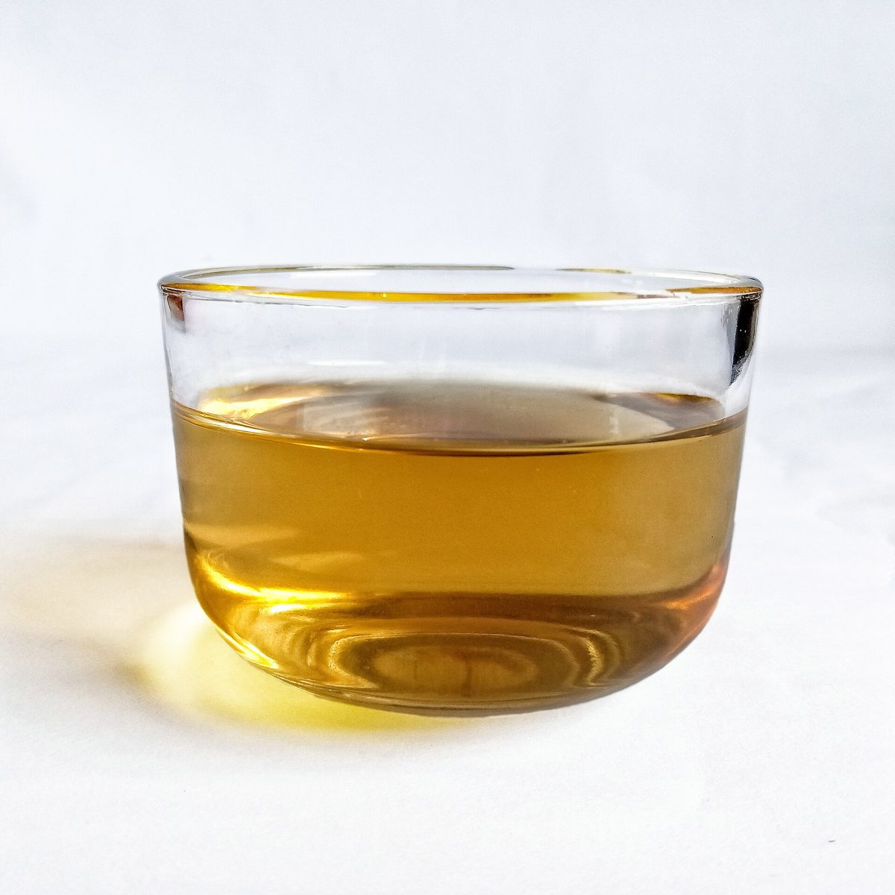

口コミ
想像した声(イメージ例)
ここに並ぶ三つの声は制作側の創作です。実在のお客様の投稿ではありません。
イメージ例
想像した声
イメージ例
Instagramをのぞいてみたいです。カフェの写真が並んでいたら、ゆっくり眺めてみたいと感じます。
イメージ例
カフェのご案内ページがあると聞くと、どんなお店なのか気になります。Instagramの更新を楽しみにしたいです。
イメージ例
ご案内のページが整ったら、まずはInstagramから訪ねてみたいです。
上の三つは制作側が作った例文で、実在のお客様の投稿ではありません。公開後は、実際のご感想の掲載方法を一緒に決めます。
イメージ
コーヒーとお茶の写真(仮置き)



写真はフリー素材のイメージです。お店のものではありません。